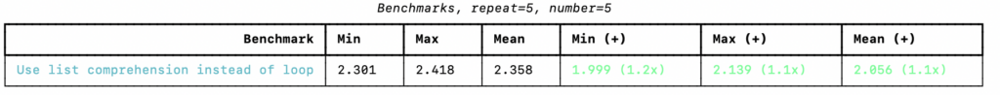
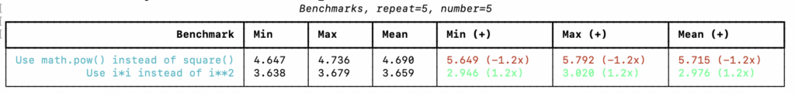

Benchmark Python with richbench
You can benchmark and systematically compare the performance of Python functions using the richbench library.
In this tutorial, you will discover how to use the richbench Python library for benchmarking.
Let's get started.
What is richbench
The project rich-bench or "richbench" is a Python library for benchmarking.
It was developed by Anthony Shaw and is available as open source on GitHub.
A little Python benchmarking tool.
-- rich-bench, GitHub.
The library will perform systematic A vs B benchmarks of many Python functions and report the results together in one large table.
It is well suited for repeated benchmarking, such as daily as part of a contentious integration suite.
richbench encourages you to write benchmarks inside functions to properly simulate the closures and scope of production code.
-- rich-bench, GitHub.
The author developed the library to address limitations with the timeit module for benchmarking in the standard library.
The problem with this approach is that the compiled code is a module, so any variables on the top-level are globals. The compiled bytecode is different to the same statements being inside a local scope (e.g. a method or function). They behave and perform very differently in CPython.
-- rich-bench, GitHub.
Now that we know about rich-bench, let's look at how we can use it.
How to Benchmark with richbench
The richbench library can be used for benchmarking Python functions.
Using the library involves three steps, they are:
- Install richbench
- Develop benchmarks for richbench.
- Run richbench
Let's take a closer look at each step in turn.
1. Install richbench
We can install the richbench library using our favorite Python package manager.
For example, we can install richbench using pip as follows:
pip install richbench
2. Develop Benchmarks
The next step is to develop benchmarks.
This involves a few steps:
- Define a directory to hold all of the benchmark files.
- Create one file for each A vs B function comparison to perform.
- For each function, define the A and B functions and summarize the comparison.
Firstly, we must create a directory to hold all of the benchmark code files.
For example, this could be named for the types of benchmarks performed, e.g. richbench-lists/.
Next, we can create one file per A (old) vs B (new) function comparison we will perform.
Functions should perform the same task but in different ways, such as creating a list of integers using a list comprehension vs with a for-loop. They are compared to see which is faster.
def for_loop():
data = list()
for i in range(100000000):
data.append(i)
def list_comprehension():
Each function should perform the same task. It must also execute long enough in wall clock time to provide a meaningful point of comparison.
Repeat the code you want to benchmark as many times as possible to create a stable benchmark. For micro-benchmarks, this can be achieved by calling 1000 - 100,000 times. If your benchmark code completes within 0.001s it is likely you will get unstable benchmarks because of the CPU doing other activities. Increase the times the target code is run within the function.
-- rich-bench, GitHub.
At the bottom of the file we must define the comparison of the functions using a variable named __benchmarks__.
The variable defines a list with the A function (old), the B function (new) and the description of the comparison.
For example:
__benchmarks__ = [
(for_loop, list_comprehension, "Use list comprehension instead of loop")
]
This can then be saved in a file in our directory with a filename that begins with "bench_" and has a descriptive suffix and a .py file extension.
Benchmarks should be in a directory and must have the filename bench_{name}.py.
-- rich-bench, GitHub.
For example:
richbench-lists/bench_lists.pyNot following this naming convention will mean the benchmarks will not run.
We just have one benchmark file in this case, but we may have many files in the directory, each performing their own A vs B compassion.
3. Run richbench
Finally, we can run the benchmark suite.
This can be achieved using the richbench command on the command line and specifying the directory of files to
For example:
richbench richbench-listsThis will then execute the benchmark comparisons in the directory.
Results are then reported in a table summarizing how the B function compares to the A function.
For example:
Benchmarks, repeat=5, number=5
┏━━━━━━━━━━━━━━━━━━━━━━━━━━━━━━━━━━━━━━━━┳━━━━━━━━━┳━━━━━━━━━┳━━━━━━━━━┳━━━━━━━━━━━━━━━━━┳━━━━━━━━━━━━━━━━━┳━━━━━━━━━━━━━━━━━┓
┃ Benchmark ┃ Min ┃ Max ┃ Mean ┃ Min (+) ┃ Max (+) ┃ Mean (+) ┃
┡━━━━━━━━━━━━━━━━━━━━━━━━━━━━━━━━━━━━━━━━╇━━━━━━━━━╇━━━━━━━━━╇━━━━━━━━━╇━━━━━━━━━━━━━━━━━╇━━━━━━━━━━━━━━━━━╇━━━━━━━━━━━━━━━━━┩
│ Use list comprehension instead of loop │ 2.301 │ 2.418 │ 2.358 │ 1.999 (1.2x) │ 2.139 (1.1x) │ 2.056 (1.1x) │
└────────────────────────────────────────┴─────────┴─────────┴─────────┴─────────────────┴─────────────────┴─────────────────┘
Color is used, red if the B is slower than A, green if B is faster than A. The numbers in the above table are green on my system.
See the screenshot below.

Each benchmark is run 5 times and this is repeated 5 times by default. The number and repeats can be configured via command line switches.
For example, we can re-run the example with on run and one repeat as follows:
richbench --times 1 --repeat 1 richbench-listsThe table shows the min, max, and mean difference between the execution time of the two functions.
It then shows the min, max, and mean difference in seconds and speedup factor of the B function compared to the A.
If you are new to benchmark metrics, see the tutorial:
How do we read the table?
Ignoring the table for a second, we can just run our code manually. Running the for-loop example 5 repeats of 5 times takes about 11.3 seconds, whereas running the list comprehension version 5 repeats of 5 times takes about 9.5 seconds.
Now, interpreting the table, we can see that the table focuses on the difference between running function B vs function A with the given number of runs and repeats.
The library does not document the table columns.
My guess is that the min, max, and mean report the distribution of scores for 1 repeat of the B function (e.g. 1 x 5 runs).
My guess is that the next three columns report the min, max, and mean difference between B to A, e.g. - for slower and + for faster. The values are in seconds and the bracketed values are a speedup.
If correct, the table above suggests that on average the list comprehension is about 2.056 seconds faster (when run 5 times) than the for loop version or a 1.1x speedup factor.
Now that we know how to use the richbench library for benchmarking, let's look at a worked example.
Example of Benchmarking Squaring with rich-bench
We can develop a worked example of benchmarking different functions.
In this case, the focus is on tasks for creating a list of squared integers from 0 to (10,000,000 - 1).
The first file will compare the multiplication (i*i) and power (i**2) operators.
This is saved as richbench_squares/bench_operators.py
# SuperFastPython.com
# compare square operators with richbench
# square using power operator **
def power_operator():
data = [i**2 for i in range(10000000)]
# square using multiplication operator *
def multiplication():
data = [i*i for i in range(10000000)]
# compare a and b description
__benchmarks__ = [
(power_operator, multiplication, "Use i*i instead of i**2")
]
The second file will compare the math.pow() function to a custom square() function.
This is saved as richbench_squares/bench_functions.py
# SuperFastPython.com
# compare square functions with richbench
# square with square() custom function
def square_function():
def square(value):
return value * value
data = [square(i) for i in range(10000000)]
# square with math.pow()
def power_function():
import math
data = [math.pow(i,2) for i in range(10000000)]
# compare a and b description
__benchmarks__ = [
(square_function, power_function, "Use math.pow() instead of square()")
]
And that's it.
We can then call the richbench command to calculate the benchmarking
richbench richbench_test1/This provides the table below.
Benchmarks, repeat=5, number=5
┏━━━━━━━━━━━━━━━━━━━━━━━━━━━━━━━━━━━━┳━━━━━━━━━┳━━━━━━━━━┳━━━━━━━━━┳━━━━━━━━━━━━━━━━━┳━━━━━━━━━━━━━━━━━┳━━━━━━━━━━━━━━━━━┓
┃ Benchmark ┃ Min ┃ Max ┃ Mean ┃ Min (+) ┃ Max (+) ┃ Mean (+) ┃
┡━━━━━━━━━━━━━━━━━━━━━━━━━━━━━━━━━━━━╇━━━━━━━━━╇━━━━━━━━━╇━━━━━━━━━╇━━━━━━━━━━━━━━━━━╇━━━━━━━━━━━━━━━━━╇━━━━━━━━━━━━━━━━━┩
│ Use math.pow() instead of square() │ 4.647 │ 4.736 │ 4.690 │ 5.649 (-1.2x) │ 5.792 (-1.2x) │ 5.715 (-1.2x) │
│ Use i*i instead of i**2 │ 3.638 │ 3.679 │ 3.659 │ 2.946 (1.2x) │ 3.020 (1.2x) │ 2.976 (1.2x) │
└────────────────────────────────────┴─────────┴─────────┴─────────┴─────────────────┴─────────────────┴─────────────────┘
The results for the first test are slower and marked in red whereas the results for the second test are faster and marked in green.
The screenshot below shows this.

We can see that the i*i operator is faster than the i**2 operator, showing a speed-up factor of about 1.2x.
We can also see that the math.pow() function is slower than the custom square() function, showing a slowdown of about 1.2x. This is not surprising as the square() function uses multiplication internally whereas the math.pow() uses the power operator, matching the results for the previous test.
This highlights how we can use the richbench to benchmark and compare functions performing the same tasks.
Takeaways
You now know how to use the rich-bench Python library for benchmarking.